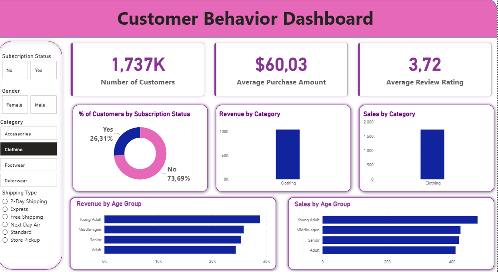
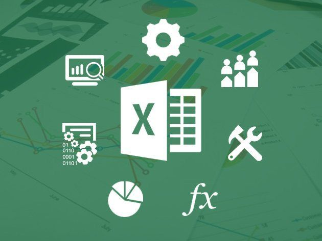
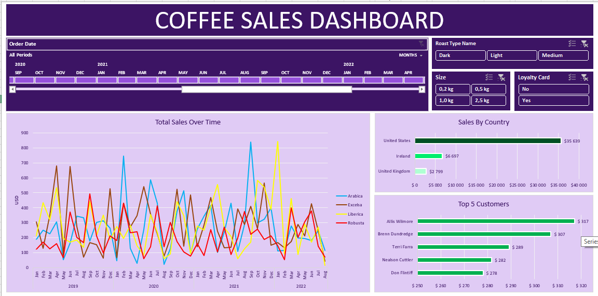

In this project, I analyzed retail consumer shopping data to help a company better understand purchasing behavior, improve customer engagement, and optimize marketing strategies. I performed data cleaning and transformation using Python, conducted structured analysis in SQL to identify trends, customer segments, and purchase drivers, and built an interactive Power BI dashboard to visualize key insights.
The project concludes with business recommendations focused on improving sales performance, customer loyalty, and data-driven decision-making

In this project, I cleaned and transformed raw layoffs data from Kaggle using SQL to make it analysis-ready. Key steps included: Creating a staging table to preserve raw data. Removing duplicates and standardizing inconsistent entries. Handling NULLs and populating missing values. Converting dates and numeric fields to proper data types. This project demonstrates practical skills in SQL data cleaning, standardization, and preparation for analysis.
In this project, I performed exploratory data analysis on the cleaned 2022 layoffs dataset using SQL. Key analyses included: Previewing the dataset and understanding basic statistics. Identifying maximum layoffs and high-impact companies. Summarizing total layoffs by company, country, year, and funding stage. Calculating rolling monthly totals to track trends over time. Ranking top companies with highest layoffs per year. This project demonstrates practical skills in SQL aggregation, ranking, and trend analysis to uncover insights from real-world data.

In this project, I used advanced Excel functions such as LOOKUP, INDEX, MATCH, and SUMIFS to analyze and organize business data efficiently. The project focuses on improving data retrieval, dynamic analysis, and creating structured summaries to support reporting and decision-making.
This demonstrates strong skills in Excel data modeling, logical analysis, and formula-based problem solving.

In this project, I analyzed coffee sales data using Microsoft Excel to identify revenue trends, top-performing products, and customer purchasing patterns. I used pivot tables, charts, slicers, and formulas to build an interactive dashboard that allows users to explore sales performance by product type, location, and time period.
The project demonstrates skills in data cleaning, dashboard design, KPI tracking, and business insight generation to support data-driven decision-making.
In this project, I analyzed plant production and performance data to identify operational trends and efficiency opportunities. I cleaned and structured the dataset, summarized key metrics, and created visual reports to track performance across time periods, categories, and locations.
The analysis helps stakeholders monitor productivity, understand performance patterns, and support data-driven operational decisions.
In this project, I analyzed survey data from data professionals to uncover insights into salary trends, job roles, and workplace satisfaction. I cleaned and structured the dataset, performed exploratory analysis, and built an interactive Power BI dashboard to visualize key metrics such as average salary by job title, preferred programming languages, and work-life balance satisfaction.
The dashboard allows stakeholders to quickly understand industry trends, compare roles, and identify patterns in employee satisfaction and career preferences, supporting data-driven decisions in career planning, talent management, and industry benchmarking.